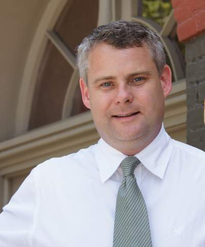
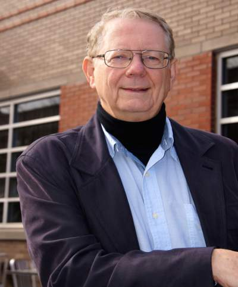
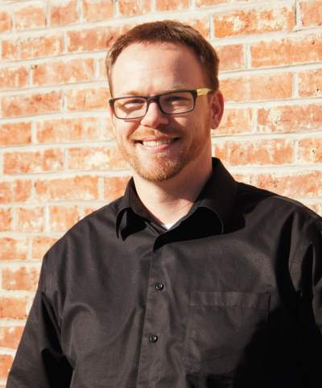

|

BRENT MATHER
As firm Principal, Brent provides direct client support on every project, coordinating the needs of each funding partner to produce a single cohesive project. He works with communities to develop housing, revitalize existing sites, strengthen small businesses, and adapt existing structures to new sustainable uses. Brent facilitated the funding to revitalize 15 Litch applications since 2012 and has been instrumental with seven Stellar Grant finalists. |
|
LYNN MOLZAN
Lynn is responsible for the delivery of quality projects to clients. He has extensive, in depth experience in many areas of architectural design, with emphasis on preservation and reuse. He joined Woollen Assoc. in 1965, becoming Principal in 1983 (Woollen, Molzan & Partners, Inc.). Lynn formed Delaware Studio and joined R&B in 2012. Lynn’s community involvement includes AIA, Old Northside Neighborhood Assn, and the New Tinker Street Committee. He has been awarded the AIA Edward D. Pierre Award, the AIA Richard Upjohn Fellow, the Kentucky Colonel Commission, and the 2003 AIA President’s Award. |

JAMES DOUGLAS SMITH
James is licensed to practice in 7 states, and is a DNR certified historic architect. As a Project Architect at R&B, he brings success to conceptual designs, project programming, graphic presentations, construction documents, owner representation, construction management, and design-build services. James moved to Indianapolis in 2014 from Crown Point, where he owned his own firm and served as adjunct professor at Purdue Calumet for 14 years prior to joining R&B. |
|
RONALD L. SEARCY
Ron is a versatile project architect of over 30 years experience, with proven success in Senior living, Healthcare, K-12 & Higher Education, Institutional, Municipal, and Commercial. He leads R&B in master planning, cost analysis/value engineering, code compliance, and construction administration. He is highly involved with the AIA Indiana State Chapter, serving multiple roles, including President in 2014. |

ERICK GILBERT
Erick specializes in managing project production and energy analysis at R&B. Through energy analysis, he integrates design at the schematic level to insure energy conscious design. HE brings your vision to life with 3D modeling, rendering, and printing. Erick’s design expertise includes master level academics, military construction projects, and built environment electrical design. Erick enjoys camping, hiking, deep sea adventuring, and hunting. He also has a knack for home brewing with his wife, Stephanie. |
|
DANIEL PURTHA
Daniel joined R&B IN 2014 and plans to attend Grad school later this year. During his comprehensive internship, he has gained all experiences of a working architectural firm, supporting dozens of projects from concept to completion. His drive for perfection and seeking innovative solutions is an inspiration to the entire firm. "Don’t leave us, Daniel!" "Come back often!" |
ROBYN CATES
Robyn has been in marketing and development for 14 years in non-profit arts, government, and corporate environments. She is thrilled to be working with a long-time friend in a creative, organized, and social environment. Robyn organizes R&B’s collaboration with Indianapolis Downtown Arts Dealers Association, is on the board of Heartland Actors Repertory Theatre, and volunteers for her kid’s PTSA. Careful – she might even try to sell Girl Scout cookies to you. |
|
CLAIR SCHALER
Clair brings a background of new business development, service delivery, marketing and customer relations that is essential in obtaining innovative sources of funding for our clients at R&B. She listens to the client and community to strategize the approach, and complete the application for successful grants. |
CONTACT US
MORE
1030 North Central Avenue, Suite 1
Indianapolis, IN 46202info@randbarchitects.com
317.636.3211Copyright © 2014 R&B Architects, LLC. All Right Reserved. Web Development by Open Mind Webs